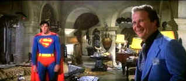

| Superman:The
Movie (SE)/ B,B- |
| Warner/1978/154/ANA 2.35 |
It's been a Krypton's age since I last watched the laser disc of
Superman and centuries since I couldn't wait for the next monthly comic book adventure featuring
featuring the man of steel versus an delectable assortment of villains, from Lex Luthor to the
diminutive Mr. Mxyzptlk.
The Superman laser disc was not exactly the best looking showcase for the
America's favorite super-hero. Large element grain with rife in the image. Colors were losing
vitality. But happily, with a young format like DVD, many films get a new life. The Superman DVD
certainly blows any other home video incarnation of the film away. However, it's definitely
suffering from over exposure, perhaps to kryptonite.
When the film opens on a small theater screen and begins in black and white I
had high hopes that many classic elements of the comic book would be given their due time. The
film, in trying to be hip, loses some of the timeless power of the comic book.
Chief amongst the virtues of Superman in his modern screen adaptation are the
villains headed by the resourceful Lex Luthor and dim-witted gofer Otis. Miss Teschmacher is a
voluptuously simple addition to the
The special effects are done with charm. Superman's flying was a lot more
impressive in 1978 than it is now and perhaps some leeway should be given the filmmakers choice to
give Lois an extensive guided Superman air tour.
 |
| Superman doesn't think it's funny.
©Warner |
|
|
|
|
|